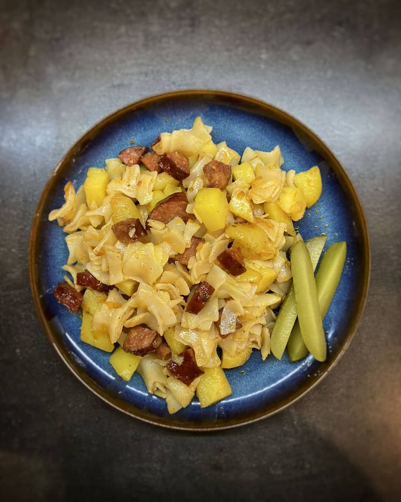

Grenadír podľa @rastyho_smaky — Normy Jedál
Panenka aj kačička je super, ale ja sa aj tak často a rád vraciam k jedlám na ktorých som vyrastal ...
keď som prišiel k babke, nemal som na stole RumpSteak s batatovym pyré 😀😀
... ale napríklad ... šúlance s makom, slivkové knedle, francúzske zemiaky alebo moje oblúbené ...
"Grenadir" ...😍
rozumej Granadir, Granatiersky pochod ... atď ... teda ako to poznáte Vy ... 😎👍😃
Manželka to veľmi nemusí. Ževraj je divné, keď sa jedlo skladá z dvoch príloh 😀😀 (cestoviny a Zemiaky) ...
Nevadí, zajtra má obed v práci, tak ja som si spravil za hrniec Grenadíru 😀
😋😎😋
.
.
.
.
#food #foodporn #foodphotography #instafood #man #maninkitchen #muzvkuchyni #varenie #cook #cooking #lovecooking #deli #delicious #mycooking #chef #slovakia #kosice #slovakman #dnesvarim #dnesjem #yummy #tasty #foodlover #eat #happy #relax #mylove #rastyhosmaky #grenadir